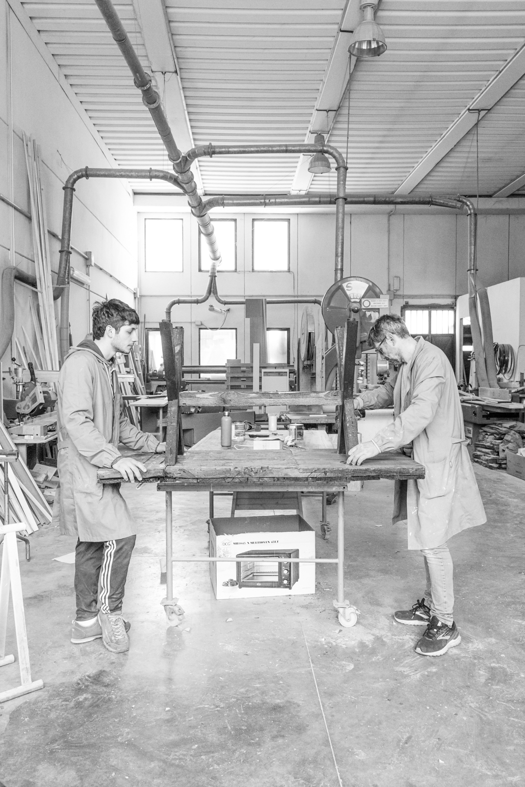
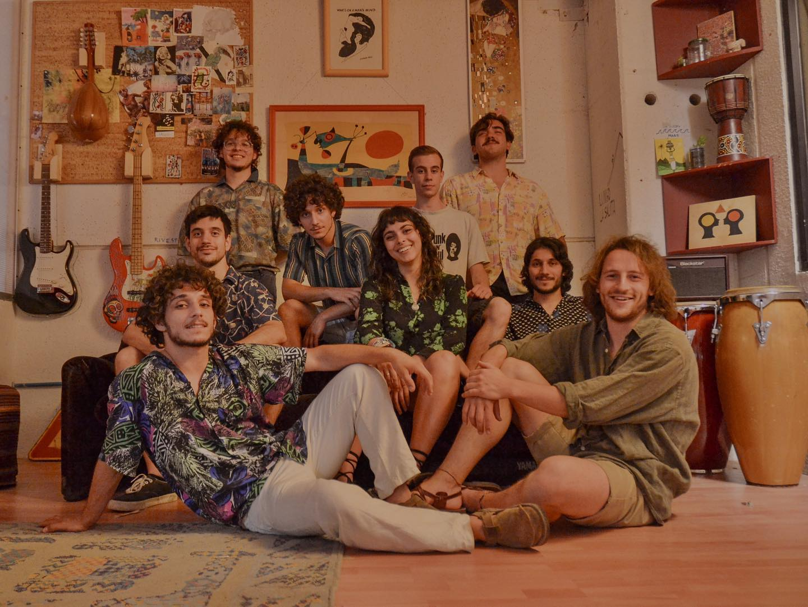
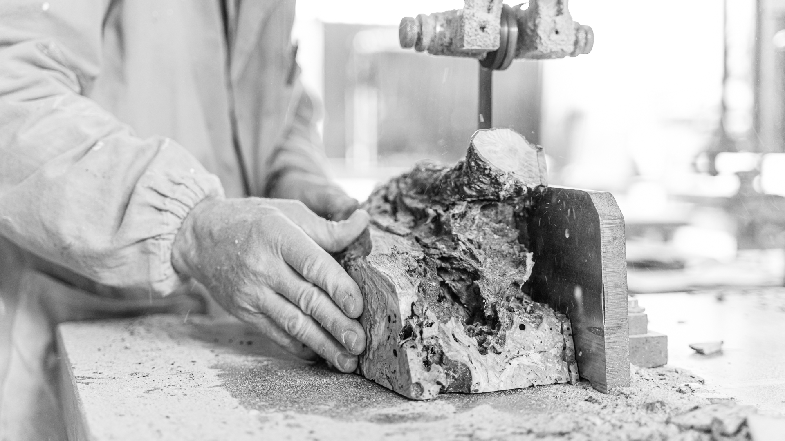
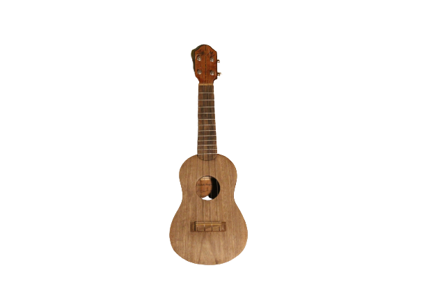
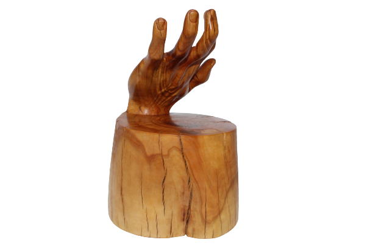
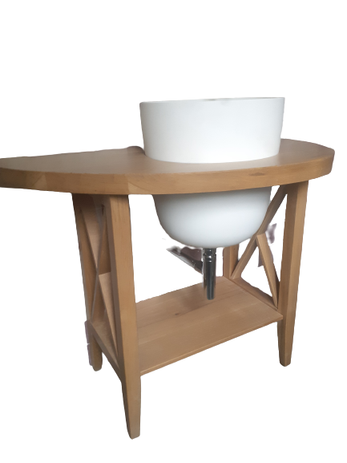

La Falegnameria artigiana Marri è una storia che si tramanda da tre generazioni, un luogo dove tradizione e innovazione si uniscono.
A partire dal 1950 fino ad oggi, la famiglia Marri conserva l’arte della lavorazione del legno.
Produzione artigianale su misura, arredo di interni e ristrutturazione di antiquari sono le basi su cui si fonda la Falegnameria. Liuteria e artigianato artistico sono invece le novità apportate dall’ultima generazione.

LA STORIA
Giancarlo Marri, nato a Perugia nel 1933, all’età di quattordici anni entra in una delle tante botteghe della città per imparare il mestiere. Aperta la propria bottega, lavora attivamente per più di quarant’anni nel territorio e si specializza sul settore dell’arredo su misura. Il figlio, Paolo Marri, segue la tradizione del padre, diventa apprendista e poi collaboratore famigliare. Nel 1993 Paolo prende le redini dell’attività e prosegue con la produzione di mobili su misura e restauro di antiquariato, ritagliandosi così la propria nicchia in un mercato sempre più legato alla grande distribuzione. Oggi la terza generazione è anch’essa apprendista ma desiderosa di apportare novità e cambiamenti. I tre fratelli, Giulio, Glauco e Francesco attualmente si stanno specializzando nella liuteria e nell’artigianato artistico e di design.
CHI SIAMO
Paolo Marri e i figli Giulio, Glauco e Francesco.
Tre fratelli cresciuti a stretto contatto con il legno che condividono la passione per la musica e suonano attivamente all’interno del gruppo Falegnameria Marri.
Rispettivamente batterista, fisarmonicista e chitarrista della band che prende il nome proprio dal luogo in cui il gruppo nasce e crea la sua musica. All’interno della bottega, infatti, i fratelli hanno creato una piccola sala prove, punto di ritrovo artistico.
L’amore per la musica si è riversato anche nell’ambito lavorativo, quindi naturalmente nella liuteria. In particolare, Giulio e Francesco hanno seguito un corso di liuteria classica a Gubbio, specializzandosi uno nella costruzione di violini, l’altro in quella di chitarre. Parallelamente Francesco porta avanti una sua piccola produzione di ukulele e Giulio di rullanti.
Glauco invece, grazie ai suoi studi in design e ad una esperienza di tirocinio fatta presso un laboratorio di intarsio, si sta specializzando proprio in questa tecnica, applicandola anche alla falegnameria classica.


FALEGNAMERIA TRADIZIONALE
Paolo Marri, aiutato dai figli, porta avanti le tradizioni dell’attività di famiglia.
La Falegnameria artigianale vanta un’esperienza di oltre sessant’anni nella lavorazione del legno e nella produzione di arredo su misura per interni, su progetto, personalizzati per ogni esigenza ed ogni stile.
Utilizziamo legni di qualità, in base alla lavorazione e alle richieste del cliente: dai classici legni di abete, rovere, frassino, noce e castagno a legni più particolari come il padouk o l’ulivo.
Effettuiamo anche produzioni di elementi in tamburato, una tecnica che può sostituire l’utilizzo del legno massello e che prevede una successiva verniciatura e laccatura.
Altra attività che viene tramandata dalla prima generazione è quella del restauro. Ricerca e cura del dettaglio ne sono i cardini. Un’importante tecnica per la buona riuscita di un restauro è la lucidatura a gommalacca che veniva utilizzata in passato e che oggi è stata quasi completamente sostituita dalle vernici poliuretaniche.
Specialità
Paolo Marri il padre, il mastro falegname dell’azienda specializzato nella falegnameria classica.
Oltre 30 anni di esperienza nel campo dell’arredo su misura, porte, librerie mensole ecc ecc.
Ristrutturazione e modifica di vecchi mobili
Giulio Marri il figlio maggiore, sta imparando i segreti del mestiere, intanto si sta specializzando nella liuteria classica, in particolare nella costruzione del violino. Nel frattempo si dedica alla costruzione di rullanti in quanto appassionato di musica e batterista del gruppo.
Francesco Marri Oltre allo studio di Chitarra al Conservatorio di Perugia, si sta specializzando nella liuteria Classica in particolare nella costruzione di Chitarre ed Ukulele.
Chitarrista del gruppo musicale.
Glauco Marri Si è laureato in design con una tesi sull’ intarsio moderno e le sue applicazioni nell’ambito del design degli interni e della gioielleria. Ha sperimentato la tecnica di scultura lignea riproducendo in scala reale la sua mano. Si dedica inoltre al graphic design e alla scenografia per eventi musicali, lavori che coniugano le due passioni principali che sono appunto la musica e la progettazione artistica.
CATEGORIE
LIUTERIA
Rullanti, ukulele, violino . . .

In questa sezione troverai rullanti, ukulele e violini
INTARSI
Mano, Mirò . . .

In questa sezione troverai rullanti, ukulele e violini
ARREDO
Libreria, mensole . . .

In questa sezione troverai rullanti, ukulele e violini